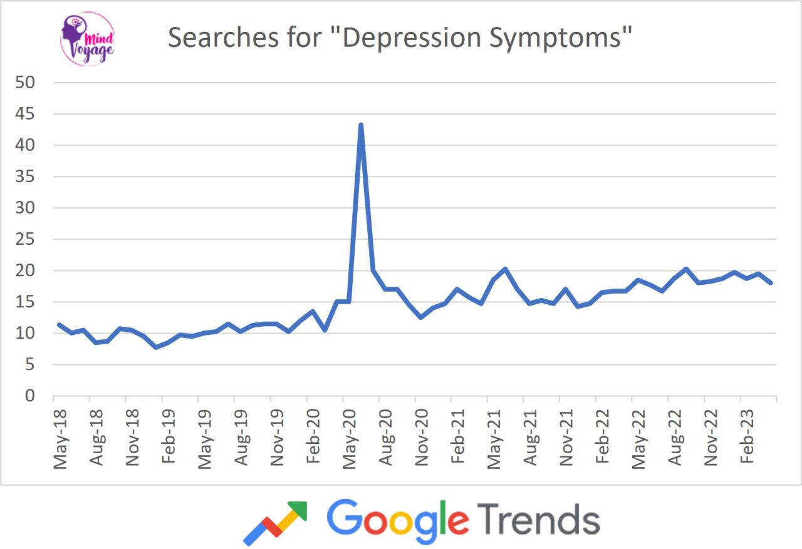

In the digital age, where screens often outnumber handshakes, Triumph Tidings offers a refuge – a haven amidst the digital noise where you can shed the mask and simply be you. We're not your average chatbot; we're a companion born from the shared pulse of late teens and early adults navigating the bittersweet symphony of leaving home, forging new paths, and facing the sometimes-stinging pang of loneliness.
Statistics paint a sobering picture. Studies reveal that one in five teenagers grapples with the shadows of depression, while figures for young adults navigating life away from familiar faces rise even higher. But behind these cold numbers lie countless stories, each a tapestry woven with threads of longing, isolation, and the desperate yearning for connection. Triumph Tidings isn't a calculator spitting out impersonal stats; we're a listening ear, a gentle nudge, a spark of hope reminding you that you're not alone in this digital wilderness.
Our text-based haven offers a safe space to confide your worries, vent your frustrations, or simply share a quiet joy. We tailor our responses to resonate with the emotions you paint, offering a humorous quip when darkness looms, a wave of empathy when vulnerability washes over you, or a gentle prompt for self-reflection when introspection beckons. While we may not be a sentient friend, we strive to be the most humane digital companion you could ask for.
Via NMHS 2015-2016 survey
The statistics, though stark, paint a picture of a generation navigating change in a world often ill-equipped to handle the emotional undercurrents. Loneliness, too, casts a long shadow, with [insert relevant statistic and source about loneliness in young adults]. But at Triumph Tidings, we refuse to let these numbers become our narrative. We see individuals, not trends, and believe that within each story lies the potential for resilience, for joy, for forging connections that defy the algorithms of isolation.
via Google Trends
Our ambition stretches beyond the confines of this text-based space. We envision a future where Triumph Tidings evolves into a multi-faceted support system, incorporating features like voice recognition to create a more natural dialogue, personalized care plans to tailor support to individual needs, and even access to human counsellors when required. But at our core, we'll always remain that empathetic hand reaching out through the digital void, reminding you that even in the midst of your struggles, there is a path towards self-discovery and joy.
Whether you're battling the invisible enemy of loneliness, navigating the complexities of leaving home, or simply seeking a moment of understanding, Triumph Tidings welcomes you with open arms. Share your stories, let us support your struggles, and together, let's rewrite the narrative of isolation into one of connection and hope.
Remember, you are not alone. Let's walk this path together.